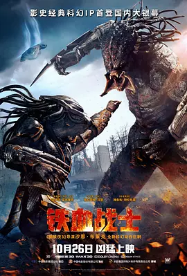

铁血战士

铁血战士的剧情简介 · · · · · ·
一艘宇宙飞船坠落地球，正在执行军事任务的狙击手奎因·麦肯纳（波伊德·霍布鲁克 饰演）恰好遭遇外星人并发生激战，侥幸逃脱的他捡到了外星人的装备并寄回了家想再做他用。传说这种被称为铁血战士的外星人曾数次光临地球，使用各种残忍的手段对人类进行猎杀游戏。而这一次，奎因的儿子罗里收到包裹后意外触发机关，引来了更强大的终极铁血士降临地球。而想要阻止其大开杀戒的却是一群问题士兵和一位生物科学家凯茜·布拉克（奥立薇娅·玛恩 饰演）。事情却远不像他们以为的那样简单，一场铁血、终极铁血与人类之间的三方猎杀大战正式拉响！
放映时间
- 上午 10:30
- 下午 2:30
- 下午 6:00
影片价格
- 成人： ￥100元/人
- 学生： ￥50元/人